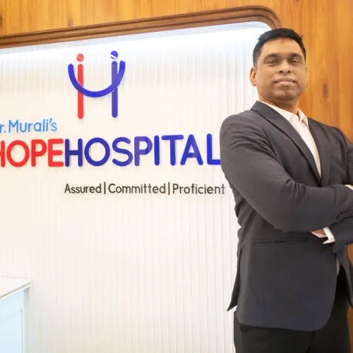

Best Hospital in Nagpur | NABH Accredited Super Specialty Center
Leading the way as the best hospital in Nagpur, delivering world-class medical care with compassion and excellence for over 19 years
Best Hospital in Nagpur - NABH Accredited Excellence Since 2012
Hope Hospital stands as the best hospital in Nagpur and Central India's first NABH-accredited comprehensive super specialty center, providing exceptional healthcare services to over 5 million people within a 500 km radius.
Led by Dr. B.K. Murali, the best orthopedic surgeon in Nagpur, renowned for expertise in knee replacement, hip replacement, and spine surgery. Our facility combines cutting-edge medical technology with compassionate patient care across our 100-bed, 24,000 sq ft state-of-the-art facility.
NABH Accredited
Certified excellence in healthcare quality standards
Expert Team
Highly qualified specialists and consultants
Advanced Technology
Latest medical equipment and facilities
Compassionate Care
Patient-centered approach to healing
Kidney Transplant Center
Recognized center for kidney transplantation
NephroPlus Partnership
Dialysis services by India's leading chain
Trusted by Thousands
Numbers that reflect our commitment to excellence in healthcare
Award-Winning Healthcare Excellence in Nagpur
Central India's first NABH-accredited super specialty hospital with nationally recognized achievements
NABH Accreditation (Since 2012)
Central India's first comprehensive super specialty centre to receive NABH accreditation for meeting high standards of healthcare quality and safety. Recognized as the premier NABH-accredited center offering world-class healthcare.
ISO 9001-2008 Certification
Hope Hospital and DrMHope are ISO 9001-2008 certified, recognizing excellence in hospital management and systems. This certification demonstrates our commitment to quality management and patient safety.
Lokmat Visionary & Innovator Healthcare Award
Dr. B.K. Murali, founder and director of Hope Hospital, was honored at the Lokmat Global Convention Awards for outstanding contributions to emergency care and innovations in orthopedic care.
Best Innovation in Healthcare IT Award
Awarded for the DrMHope hospital software developed and piloted at Hope Hospital. Recognized for contribution to IT in healthcare with DrMHope software technology.
India Innovation Growth Programme
DrMHope shortlisted among the top 50 innovators for technology in healthcare. Finalist for DrMHope HIS software technology, showcasing our commitment to technological advancement.
Best Orthopedic Surgeon - Central India
Dr. B.K. Murali frequently featured and recognized as the best orthopedic surgeon in Nagpur and Central India for expertise in joint replacements, sports medicine, and trauma care.
MISSION
Hope Hospitals, the service provider of a global healthcare system providing patient focused, high quality and cost-effective services.
VISION
Hope Hospitals to lead the way as an International health care service provider in India.
VALUE
We value our Patients first: We achieve this by putting their health at the centre of everything we do and we achieve this by listening to their needs.
Dr. B.K. Murali - The Surgeon Who Codes with AI
Dr. B.K. Murali is not just the best orthopedic surgeon in Nagpur - he's a pioneering AI healthcare innovator who bridges the worlds of medicine, technology, and artificial intelligence. As a surgeon who codes, Dr. Murali developed DrMHope Hospital Information System (HIS), an AI-powered comprehensive hospital management software that revolutionizes patient care delivery through intelligent automation and predictive analytics.
🤖 All software solutions developed by Dr. Murali are AI-focused, leveraging machine learning, natural language processing, and predictive algorithms to enhance patient outcomes, reduce wait times, improve diagnostic accuracy, and streamline hospital operations.
AI Healthcare Innovator & Surgeon
Unique combination of medical expertise, software development, and AI/ML implementation
DrMHope HIS - AI-Powered Hospital Software
Award-winning AI system with predictive analytics, automated workflows, and intelligent diagnostics
Machine Learning Diagnostic Systems
AI algorithms analyze patient data for early disease detection and personalized treatment plans
NLP-Powered Patient Care
Natural Language Processing for automated medical records, voice-to-text, and intelligent chatbots
Predictive Healthcare Analytics
AI-driven insights predict patient readmissions, optimize bed allocation, and reduce wait times
Top 50 AI Healthcare Innovators
Finalist in India Innovation Growth Programme for AI-powered healthcare technology
🧠 About DrMHope AI Platform: This intelligent hospital information system uses AI/ML algorithms to streamline patient registration, automate medical records with NLP, predict billing anomalies, optimize pharmacy inventory, and enhance clinical workflows with smart recommendations - all designed by a practicing surgeon who understands the real-world needs of healthcare providers and patients. The system learns from every interaction to continuously improve patient care quality and operational efficiency.
AI-Powered Healthcare Innovation at Hope Hospital
Dr. Murali's AI-focused technology stack revolutionizes patient care through intelligent automation, predictive analytics, and personalized treatment
Every Software & Platform is AI-Powered
From hospital management to emergency response, patient diagnosis to treatment planning - all software solutions developed by Dr. Murali integrate artificial intelligence to deliver superior patient outcomes, reduce medical errors, optimize resource allocation, and provide 24/7 intelligent healthcare assistance.
DrMHope AI Hospital Platform
Comprehensive AI-powered hospital management system
- 🧠 AI Patient Registration: Smart form filling with autocomplete and validation
- 📊 Predictive Analytics: Forecast patient admissions and resource needs
- 💊 Smart Pharmacy: AI inventory management prevents stockouts
- 🔍 Anomaly Detection: AI flags unusual billing or clinical patterns
- 📈 Revenue Optimization: ML algorithms identify revenue opportunities
- ⚡ Workflow Automation: 70% reduction in manual data entry
NLP-Powered Medical Documentation
Natural Language Processing for intelligent record-keeping
- 🎤 Voice-to-Text: Doctors dictate, AI transcribes clinical notes accurately
- 📝 Auto-Summarization: AI creates concise patient history summaries
- 🔤 Medical Terminology: NLP understands complex medical language
- 🌐 Multi-Language Support: Transcribe in English, Hindi, Marathi
- 🔐 HIPAA Compliant: Secure AI processing protects patient privacy
- ⏱️ 80% Time Savings: Reduce documentation time dramatically
AI-Assisted Diagnosis & Treatment
Machine learning for early disease detection and personalized care
- 🔬 Digihealthtwin AI: Digital twin technology simulates patient health
- 🩺 Early Detection: ML identifies disease patterns before symptoms appear
- 💉 Treatment Recommendations: AI suggests evidence-based therapies
- 📉 Risk Stratification: Predict complications and readmissions
- 🧬 Personalized Medicine: Tailor treatments to individual patient profiles
- 📸 Medical Imaging AI: Enhanced X-ray, MRI, CT scan analysis
Raftaar Emergency AI Network
AI-powered ambulance dispatch and emergency response
- 🚑 AI Dispatch: Intelligent routing finds fastest ambulance path
- 📍 Crash Detection: Auto-detects accidents and alerts emergency services
- 🤖 Anohra AI Voice: Conversational AI handles emergency calls
- ⚡ Response Time: 40% faster ambulance arrival with AI optimization
- 📱 WhatsApp AI Updates: Automated family notifications and ETAs
- 🏥 Hospital Readiness: AI prepares ER team before patient arrival
AI Health Chatbot & Virtual Assistant
24/7 intelligent patient support and appointment scheduling
- 💬 Symptom Checker: AI chatbot provides preliminary assessments
- 📅 Smart Scheduling: AI books appointments based on availability
- 💊 Medication Reminders: Personalized AI notifications for prescriptions
- 📞 24/7 Availability: Virtual assistant never sleeps
- 🌍 Multi-Language: English, Hindi, Marathi conversational AI
- 🎯 Triage Intelligence: Routes urgent cases to doctors immediately
Predictive Healthcare Analytics
AI forecasting for proactive patient care and hospital operations
- 📊 Patient Flow Prediction: AI forecasts admission patterns
- 🛏️ Bed Management: Optimize bed allocation with ML algorithms
- ⏰ Wait Time Reduction: AI minimizes patient queue times by 50%
- 👨⚕️ Staff Optimization: Predict staffing needs based on patient volume
- 💰 Cost Reduction: AI identifies waste and inefficiencies
- 🔮 Readmission Prevention: ML predicts which patients need follow-up
AI-Enhanced Medical Imaging
Computer vision for faster, more accurate diagnostic imaging
- 🖼️ Image Analysis: AI detects fractures, tumors, and abnormalities
- 🔍 Enhanced Accuracy: 95%+ accuracy in fracture detection
- ⚡ Instant Reports: AI generates preliminary radiology reports
- 🧠 Brain Scan AI: Detect strokes, hemorrhages, tumors automatically
- 🫁 Chest X-ray AI: Identify pneumonia, TB, lung nodules
- 🦴 Orthopedic AI: Measure joint angles, detect arthritis progression
AI Clinical Decision Support System
Intelligent recommendations for evidence-based medicine
- 💡 Treatment Suggestions: AI recommends protocols based on latest research
- ⚠️ Drug Interaction Alerts: Prevent adverse medication combinations
- 📋 Clinical Pathways: AI guides doctors through best practices
- 🧪 Lab Result Analysis: AI flags critical values and trends
- 🎯 Dosage Optimization: Calculate precise medication doses
- 📚 Knowledge Base: Access 100,000+ medical studies via AI
How AI Benefits Our Patients
Reduction in wait times with AI queue management
Diagnostic accuracy with AI-assisted imaging
AI chatbot support for patient queries
Faster emergency response with AI dispatch
Reduced medication errors with AI drug checking
Personalized treatment plans powered by AI
The Future of Healthcare is Here: Dr. Murali's vision combines human expertise with artificial intelligence to deliver superior patient outcomes, reduce costs, improve safety, and make world-class healthcare accessible to all.
Advanced Medical Equipment & Facilities
Latest technology and modern facilities for accurate diagnosis and effective treatment
Heart Lung Machine
Advanced cardiopulmonary bypass equipment for complex cardiac surgeries
Laparoscope & Arthroscope
Minimally invasive surgery equipment for faster recovery and less scarring
Dialysis Unit - NephroPlus
Managed by NephroPlus, India's leading chain of dialysis centers. State-of-the-art hemodialysis machines with expert nephrologists and trained technicians
C-arm Flatpanel
Real-time X-ray imaging for surgical procedures and orthopedic interventions
Cath Lab
State-of-the-art catheterization laboratory for cardiac interventions
Carl Zeiss Microscope
Precision surgical microscope for delicate neurosurgical procedures
Endoscopy
Advanced endoscopic equipment for diagnostic and therapeutic procedures
Colonoscopy
Modern colonoscopy equipment for comprehensive GI examination
Anesthesia Workstation
Advanced anesthesia delivery systems for patient safety during surgery
Modular OT
Ultra-modern modular operation theaters with HEPA filtration
Ultrasound
Latest ultrasound technology for accurate diagnostic imaging
24x7 Pathology Lab
Round-the-clock pathology services with latest diagnostic equipment
24x7 Pharmacy
Always-open in-house pharmacy with comprehensive medication stock
Physiotherapy
Dedicated physiotherapy department for rehabilitation and recovery
X-ray & Imaging
Digital X-ray and advanced medical imaging facilities
24x7 Emergency
Fully equipped emergency department with trauma care specialists
Specialized Centers for Comprehensive Care
Cardiac Science
Orthopaedics
Neuroscience
Critical Care
Joint Replacement & Arthroscopy
Obstetrics and Gynecology
Pediatrics & Paediatric Surgery
Minimal Invasive Surgery
Gastroenterology
Nephro & Uro
Oncology
Mother & Child
Emergency Medicine
Cardiology & Cardiothoracic Surgery
Experienced Medical Consultants with Unparalleled Patient Care
20+ highly qualified specialists and consultants dedicated to your health

DR. MURALI BALASUNDARAM (DR. B.K. MURALI)
CHAIRMAN & MANAGING DIRECTOR | M.S. (Ortho) | MBBS
🧠 AI Healthcare Pioneer | Orthopedic Surgeon | The Surgeon Who Codes with AI | Healthcare Entrepreneur | BNI Leader (7+ Years)
🤖 AI-First Healthcare Visionary: With over 20 years of experience in the medical field, Dr. Murali Balasundaram is not just the best orthopedic surgeon in Nagpur and Central India - he's a pioneering AI healthcare innovator who leads India's transformation in intelligent medicine. His mission: harness artificial intelligence, machine learning, and predictive analytics to deliver superior patient outcomes, reduce medical errors, and make world-class healthcare accessible to all.
Every software platform developed by Dr. Murali is AI-powered and AI-focused: DrMHope AI Platform (intelligent hospital management), Raftaar Emergency Seva AI (AI-driven ambulance dispatch), Digihealthtwin (AI diagnostic systems), and 100+ AI-powered healthcare applications. His unique combination of surgical expertise and AI development skills creates software that truly understands healthcare needs from a practitioner's perspective.
As a healthcare entrepreneur and AI innovator, Dr. Murali has revolutionized emergency medical services through AI-powered platforms including Emergency Seva (Raftaar Help) with Anohra AI Voice Assistant, Bachao, and Insta Aid. These systems use machine learning for intelligent ambulance dispatch, NLP for voice-activated emergency response, and predictive algorithms to optimize patient outcomes. An active BNI (Business Network International) member for 7+ years, Dr. Murali leverages professional networking to build AI-focused partnerships that advance healthcare innovation.
🧑💻 The Surgeon Who Codes with AI - Dr. Murali has successfully built and delivered 100+ AI-powered web and mobile applications using React, Supabase, and cutting-edge machine learning frameworks. From NLP-powered medical records to computer vision diagnostic tools and predictive healthcare analytics, his software solutions integrate AI at every layer - transforming raw data into actionable intelligence that saves lives and improves patient care quality.
Education & Qualifications:
Current Positions & Founded Organizations:
Surgical Specializations:
Awards & Recognition:
Professional Affiliations & Memberships:
🤖 AI Technology & Healthcare Innovation
Dr. Murali's unique combination of surgical excellence, software development expertise, and AI/ML mastery has resulted in groundbreaking AI-powered healthcare innovations that benefit thousands of patients daily:
Award-winning AI-powered Hospital Information System with NLP medical records, predictive analytics, smart pharmacy inventory, anomaly detection, and automated clinical workflows
India's first AI-driven medical logistics aggregator on ONDC with intelligent ambulance dispatch, Anohra AI Voice Assistant, crash detection, and predictive ETA calculations
Digital twin technology with machine learning for early disease detection, personalized treatment recommendations, and patient health simulation
Computer vision algorithms for X-ray, MRI, CT analysis with 95%+ accuracy in fracture detection, tumor identification, and orthopedic measurements
24/7 NLP-powered chatbot for symptom checking, appointment scheduling, medication reminders, and multi-language patient support
Successfully built web and mobile applications using React, Supabase, TensorFlow, and advanced ML frameworks across healthcare, civic tech, and intelligent automation
ML models for patient flow prediction, bed management optimization, readmission prevention, and operational cost reduction
Intelligent treatment recommendations, drug interaction alerts, dosage optimization, and evidence-based clinical pathways powered by 100,000+ medical studies
"With over 19 years in medicine, my mission is clear: harness the power of artificial intelligence and machine learning to revolutionize patient care. At Hope Hospital, we don't just use AI as a buzzword - every software platform I develop integrates intelligent algorithms to reduce medical errors, predict patient needs, optimize treatments, and save lives. The future of healthcare is AI-powered, personalized, and accessible to all - and we're building that future today."
- Dr. Murali Balasundaram (Dr. B.K. Murali), AI Healthcare Pioneer
Advisory Board
Expert guidance shaping Hope Hospital's commercial and strategic direction
Mr. Nick Orton
Advisor - Commercial Strategy
Mr. Nick Orton brings extensive expertise in commercial strategy and business development to Hope Hospital's advisory board. His strategic insights guide our commercial operations, helping us expand our reach while maintaining our commitment to accessible, high-quality AI-powered healthcare.
Strategic Focus Areas:
Dr. Akshay Anil Akulwar
Advisor - Surgical Excellence & Minimal Access Surgery
MS, MCh Coloproctology (UK), PhD MAS
Dr. Akshay Akulwar, with 13+ years of experience including 5 years of specialized training in UK NHS hospitals, provides strategic guidance on surgical excellence, minimal access surgery protocols, and advanced colorectal care. His international expertise shapes Hope Hospital's surgical standards and training programs.
Advisory Focus Areas:
Biji Tharakan Thomas
Partner - Digital Health Services
Founder & CEO, Bettroi / Betser Life
Biji Tharakan Thomas, founder and CEO of Bettroi and Betser Life, brings cutting-edge expertise in AI-driven healthcare solutions and digital health transformation. His leadership in health-tech innovation drives Hope Hospital's digital health initiatives, AI integration, and technology-powered patient care systems.
Partnership Focus Areas:
Jean John
Partner - Healthcare Operations
Co-Founder, Bettroi / Betser Life
Jean John, co-founder of Bettroi and Betser Life, provides strategic expertise in healthcare operations, digital service delivery, and patient experience optimization. His operational excellence and innovation mindset enhance Hope Hospital's service delivery, digital patient engagement, and operational efficiency.
Partnership Focus Areas:
Ruby Ammon
Co-Owner & Director
Hope Hospital | DrMHope Softwares | Hope Trust Foundation
Ruby Ammon (Caroline Ruby Ammon) is Co-Owner and Director of Hope Hospital, Co-Owner of DrMHope Softwares Pvt. Ltd., and Owner/Director of Hope Trust Foundation in Melbourne, Australia. With a Master's Certificate in Healthcare Leadership from Cornell University, she brings pioneering expertise in healthcare IT, hospital accreditation, and operational excellence to Hope Hospital's strategic vision.
Major Achievements:
Core Expertise:
Global Healthcare Innovation:
Contact: contact via email
Ishita Murali
Director
Hope Hospital
Ishita Murali serves as Director at Hope Hospital, bringing valuable expertise in enterprise technology, business management, and strategic operations. With her background from Oracle and management education from XIME Kochi, she contributes to Hope Hospital's digital transformation initiatives, operational excellence, and technology-driven healthcare delivery systems.